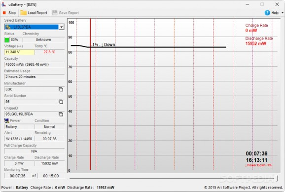

Track your battery health and usage statistics in real time with a minimal interface.
uBattery is a lightweight and efficient battery monitoring tool for Windows laptops that provides essential information about your device’s power usage and battery condition. Designed to be simple yet informative, the application enables users to understand how their battery behaves over time and helps in identifying potential issues before they escalate.
With real-time updates and intuitive visuals, uBattery displays the battery's discharge rate, temperature, capacity, and more. A dynamic graph allows users to observe how quickly the battery is draining based on current workload, offering valuable insights into power consumption patterns.
In addition to live monitoring, uBattery also includes a report generation feature that allows you to export battery status logs for later analysis. This is particularly useful when diagnosing irregular discharge behavior or planning for battery replacement.
Whether you're working remotely, traveling, or simply want better insight into your device’s power management, uBattery is an ideal companion for keeping your battery health in check.
Track discharge rate, battery temperature, capacity, and other key metrics in real-time.
Visualize how your battery performance changes over time through a simple, dynamic graph.
Access technical details such as serial number, chemistry, design capacity, and more.
